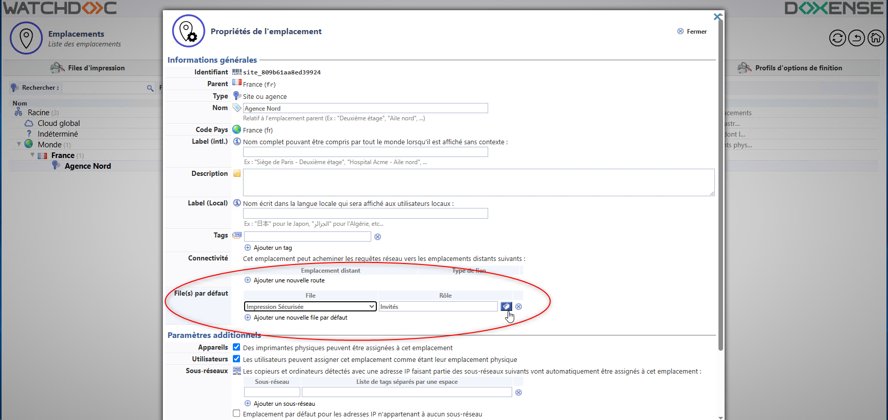
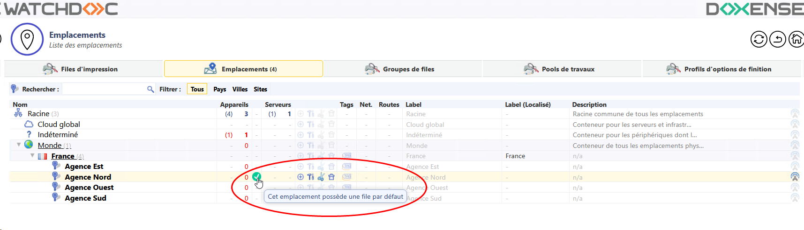
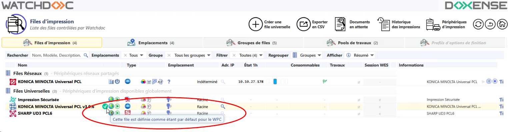
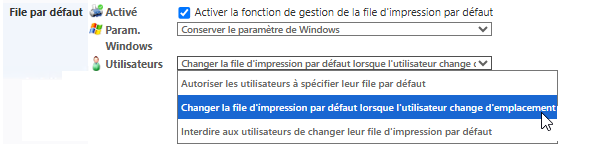
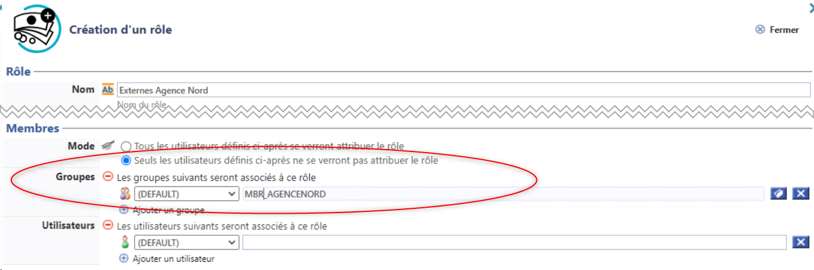
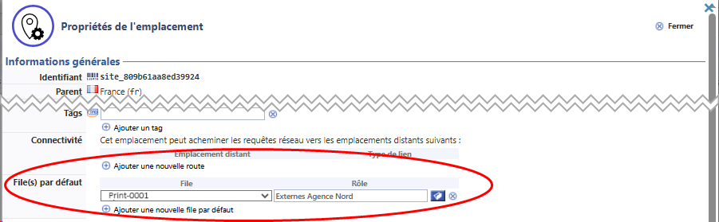

Principe
Pour faciliter l'utilisation des files d'impression gérées par WPC for Windows, l'administrateur peut définir une file d'impression universelle par défaut pour un groupe d'utilisateurs et un emplacement donnés.
Ainsi lorsqu'un utilisateur se déplace, il peut se voir proposer la file par défaut associée à l'emplacement d'où il lance sa demande d'impression.
En fonction de la configuration et de la politique d'impression définie, l'utilisateur dispose de plus ou moins de liberté pour refuser cette file par défaut et en choisir une autre ou pas.
Plusieurs files par défaut peuvent être associées à un emplacement donné. Par exemple, l'Agence Nord peut vouloir proposer une file par défaut A4 noir et blanc pour tous les membres des Agences Est, Sud et Ouest, mais attribuer par défaut une file A3 couleur aux membres de l'équipe Marketing de l'Agence Est qui ont besoin d'imprimer des affiches en couleur.
Etapes
La configuration de la file par défaut pour WPC for Windows requiert les étapes suivantes :
-
configurer l'emplacement pour lui associer une file par défaut et un rôle associé ;
-
configurer WPC for Windows pour activer la file par défaut et les modalités d'utilisation de cette fonction.
Procédure
Configurer la file par défaut et le rôle associés à l'emplacement
-
Depuis le Menu principal de l'interface d'administration de Watchdoc, cliquez sur Files d'impression, emplacements, groupes de files et pools ;
-
cliquez sur l'onglet Emplacements ;
-
dans la liste des emplacements, cliquez sur le bouton Editer
 de l'emplacement auquel vous souhaiter attribuer une file par défaut ;
de l'emplacement auquel vous souhaiter attribuer une file par défaut ; -
dans l'interface Propriétés de l'emplacement, rendez-vous dans la section File(s) par défaut ;
-
dans la liste des Files, sélectionnez la file que vous souhaitez associer à l'emplacement ;
-
dans la colonne Rôle, cliquez sur le bouton Parcourir
 pour accéder à la liste des rôles et y sélectionner le rôle associé à la file par défaut ;
pour accéder à la liste des rôles et y sélectionner le rôle associé à la file par défaut ; Si le rôle que vous souhaitez associer ne figure pas dans la liste, cliquez sur Créer un nouveau rôle pour l'ajouter (cf. Créer un rôle).
-
réitérez l'opération si vous souhaitez associer plusieurs files par défaut à d'autres rôles ;
-
validez la configuration en cliquant sur.
 :
:
èLorsqu'une file par défaut est associée à un emplacement, une icone verte s'affiche dans la liste des emplacements et dans la liste des files d'impression :


Configurer la file par défaut dans WPC for Windows
-
Depuis le Menu principal de l'interface d'administration de Watchdoc, cliquez sur Configuration avancée ;
-
dans l'interface Configuration avancée, cliquez sur Configuration Client Windows ;
-
dans l'interface Configuration Client Windows, rendez-vous dans la section File par défaut ;
-
cochez la case Activer la fonction de gestion de la file d'impression par défaut ;
-
pour le paramètre Utilisateurs, sélectionnez la mention Changer la file par défaut lorsque l'utilisateur change d'emplacement ;
-
validez la configuration de WPC for Windows :

Cas d'usage
Votre entreprise dispose de quatre agences : Nord, Est, Sud et Ouest.
Vous souhaitez que, lorsque les salariés des autres agences sont en déplacement dans l'agence Nord, ils utilisent la file par défaut associée à l'emplacement Agence Nord.
-
Vous concevez donc un rôle"Externes Agence Nord" excluant tous les salariés qui ne sont pas membres du groupe Agence Nord :

-
Vous associez ce rôle à la file par défaut configurée pour l'emplacement AgenceNord :

-
Vous configurez WPC for Windows en activant la fonction File par défaut et en précisant que la file change lorsque l'utilisateur change d'emplacement (cf. Configuration WPC - File par défaut).